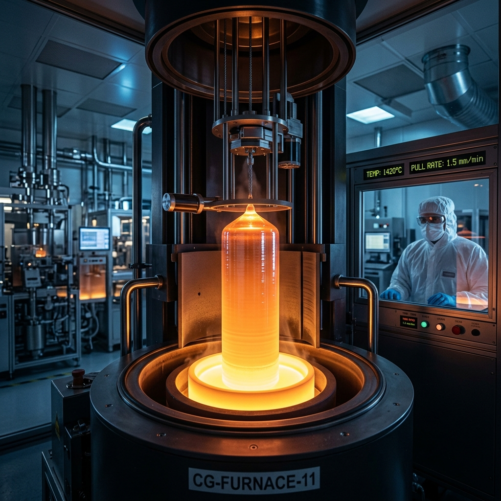
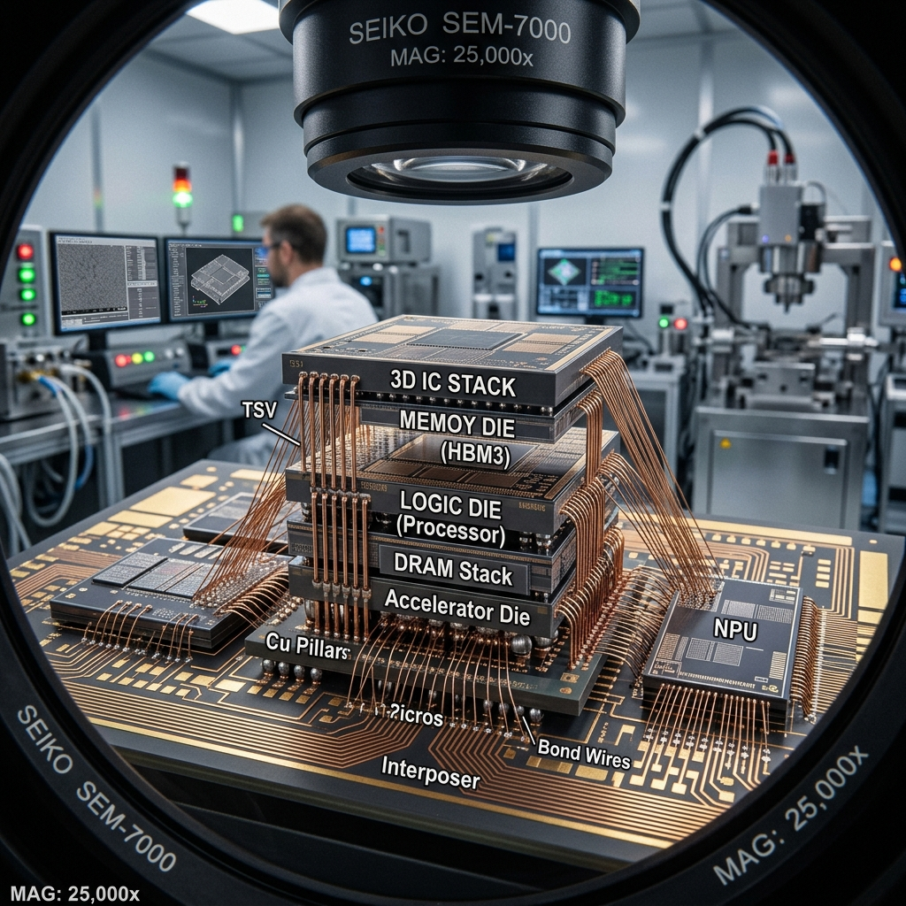

Semiconductor
Procurement, Global Supply Chain, and End-Use Industries
A clear overview of how chips are bought, made globally, and used across modern industries.
30-minute presentation plan
Three assignments combined into one connected story.
Why semiconductors matter
Chips are the hidden foundation of modern products and digital infrastructure.
A semiconductor chip is a tiny electronic device that controls, stores, senses, or processes information. It powers products as simple as a light switch and as complex as smartphones, data centers, automobiles, medical devices, and defense systems.
Global semiconductor sales in 2025, up 25.6% from 2024.
SIA projected annual sales could approach roughly $1 trillion in 2026.
U.S. CHIPS programs target R&D and manufacturing resilience.
Why it matters for logistics: shortages or delays can stop production lines for cars, phones, servers, and industrial machines.
From silicon to a finished chip
A chip starts as material, becomes a patterned wafer, then is packaged and tested.

Important procurement point: Semiconductor procurement is not only buying the final chip. It includes sourcing wafers, chemicals, gases, advanced equipment, packaging materials, logistics, and quality testing services.
Lithography is a key step because it prints extremely small circuit patterns onto silicon.
Procurement of semiconductors
Procurement means securing the right chips and production inputs at the right quality, cost, and time.
What is bought
- Finished chips
- Wafers
- Chemicals and gases
- Equipment
- Packaging/test services
Who buys
- Electronics firms
- Automakers
- Cloud companies
- Industrial manufacturers
- Defense/medical firms
Procurement goal
- Stable supply
- Correct specifications
- Controlled cost
- Quality and compliance
- Backup options
How semiconductor buying usually works
The process is slow because chips must be qualified before mass use.
Common mistake: treating chips like simple spare parts. In reality, changing a chip can require redesign, re-testing, or re-certification.
What exactly must be sourced?
Semiconductor procurement covers a whole ecosystem of materials, tools, IP, and services.
Materials
- • Silicon wafers
- • Photoresist
- • Specialty gases
- • Chemicals
Equipment
- • Lithography
- • Etch/deposition
- • Inspection
- • Metrology
Design inputs
- • EDA software
- • IP cores
- • Reference designs
- • Engineering talent
Back-end services
- • Assembly
- • Packaging
- • Burn-in
- • Final testing
Procurement complexity increases because a shortage in one small input can delay the whole chip production process.
Main risks and how companies reduce them
Semiconductor supply is high-value, global, and sensitive to disruption.
The global semiconductor supply chain
No single country controls the full chain. The industry is highly specialized and interdependent.
Who does what in the chip chain?
Different regions lead different steps of the value chain.
Because each region specializes, supply-chain resilience depends on coordination, not isolation.
From design file to final product
A chip crosses companies, borders, and quality checks before it reaches a customer.
Example: An AI chip can be designed by a fabless company, fabricated by a foundry, packaged with high-bandwidth memory, shipped to server makers, and installed in data centers.
Logistics challenge: every handoff needs documentation, temperature/shock control, traceability, customs compliance, and quality records.
Why semiconductor supply chains become fragile
The chain is capital-intensive and contains several chokepoints.
Advanced tools
EUV lithography and precision tools are hard to substitute.
Capacity
Building fabs takes years and billions of dollars.
Materials
Shortage of wafers, gases, or chemicals can delay production.
Policy risk
Export controls, tariffs, and national-security rules affect trade.
Industries that semiconductors end up using
Every modern industry uses chips, but each industry needs different chip types.
Semiconductors are both enabling products and creating competition for limited manufacturing capacity.
Automotive and electric vehicles
Modern vehicles are becoming computers on wheels.

AI, data centers, healthcare, and industry
Advanced computing is increasing demand for logic, memory, networking, power, and sensors.
SIA reported 2025 industry growth was driven strongly by logic and memory products, reflecting AI and computing demand.
Key takeaways
The three assignments connect into one business logic: chips are strategic supply-chain products.
Sources used
Use this slide as the final reference slide after Q&A.